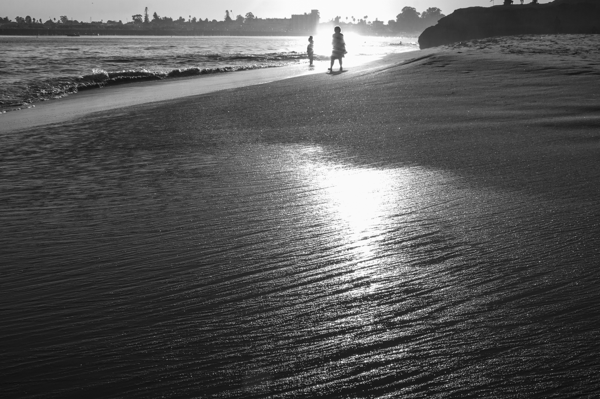
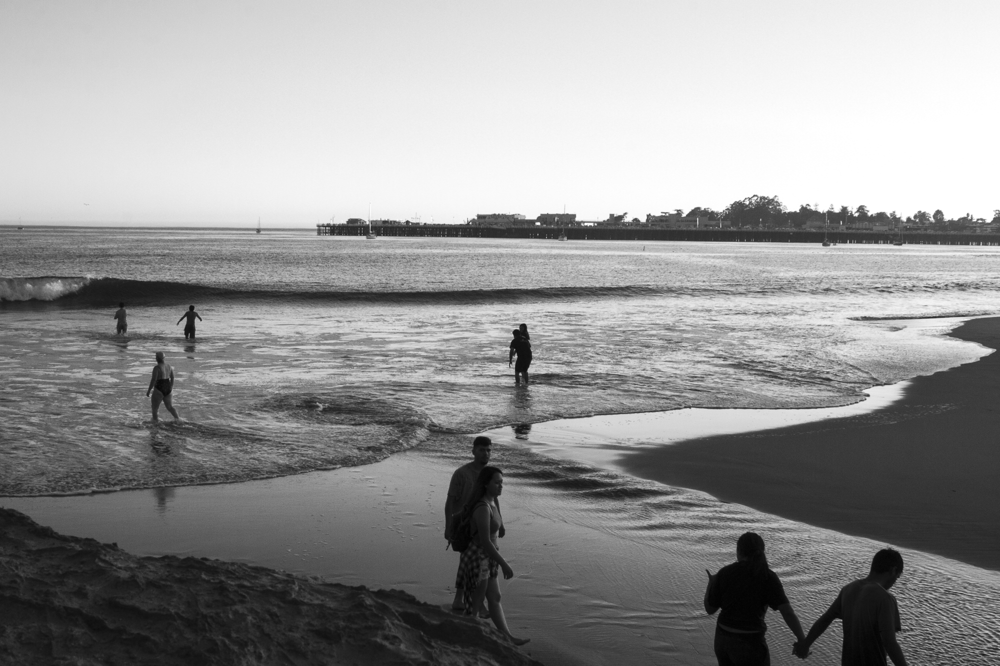
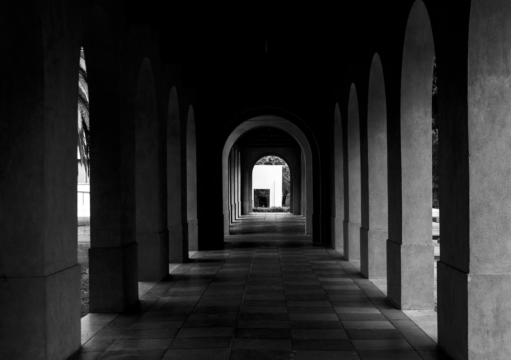

KYRA SYCIP
Photography
B&W
Intro to Photography Class - Fall 2019 at San Jose State University
Medium: Canon DLSR Camera, Lightroom Classic
Utilizing newfound techniques and skills from this class, I have discovered so many amazing ways to portray moments in time that inspire me. These photos are from various collections and projects throughout my time in this class, and till now I am finding new things I love about each image.
In these images I am heavily influenced by the use of leading lines. I'm in awe by the way lines lead our eyes around a curvy or straight pathway, without any desired end result. Lighting, textures, and tonal ranges all accent this notion of how lines can lead you in more ways than one. Behind these photographs is the never ending evolving concept of how line directs paths.



FILM
FILM
For FUN! - Shot on 35 mm film
Medium: Canon Film Camera, 35 mm film
In my spare time, (especially in the summers) I enjoy shooting film photos on my Canon Film Camera to retain a nostalgic feel to my photos. In doing so I keep my images completely raw, unedited, and untouched. I do this because I believe the best way to achieve nostalgia is by participating in the original processes of the medium. In this case, it is by simply developing the image and leaving it untouched. I solely rely on composition and natural lighting entirely for my film photos. Additionally I am constantly finding myself inspired by the 60's-80's. Taking photos of locations that have been around for well longer than I have been alive quite literally excites and inspires me. These photos are a few of my favorites.